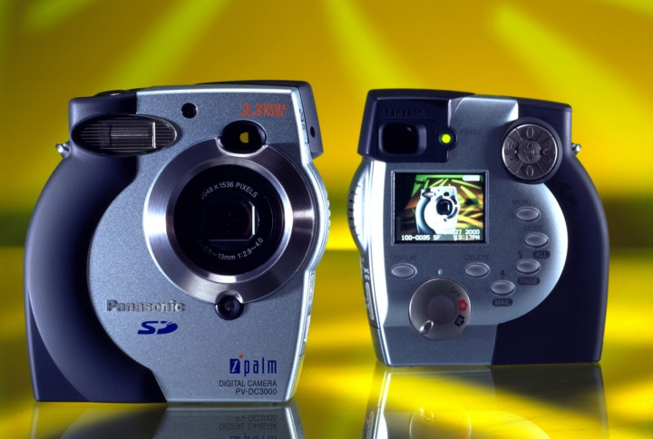
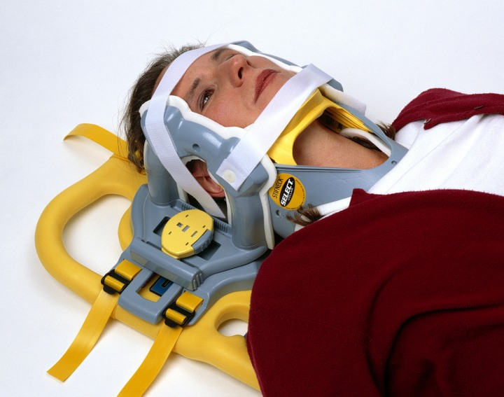
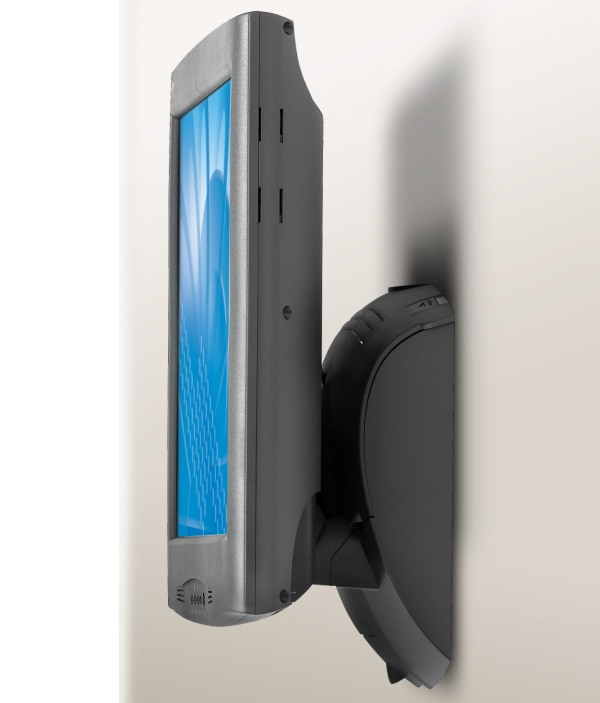
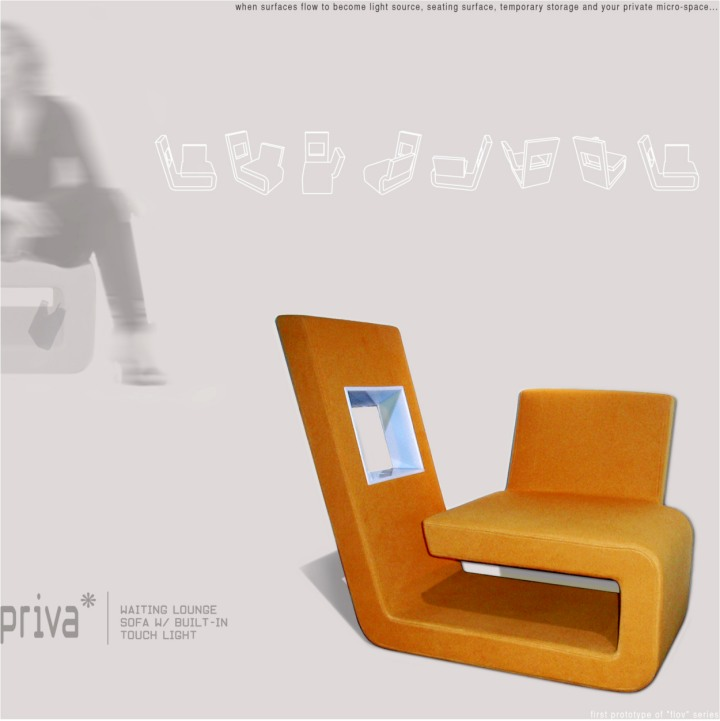

|
Kodak, 3M, Panasonic, Fujitsu, Symbol Technologies ve Graco gibi firmalarkendi bünyelerinde de tasarým ekibi olmasýna raðmen neden sizi tercihettiler?.. Bu firmalara hala proje yapmaya devam ediyor musunuz?
Mirzat Koç: "Üçüncü Göz". Ana sebebi kýsaca budur. In-house tasarým ekipleri çoðu zaman yaptýklarý iþler içinde boðulurlar. Toplantýlar, iþ takipleri, üretim ve eðitim seyahatleri zamanlarýnýn büyük bir kýsmýný aldýðýndan dolayý tasarým yapmaya zaman bulamayabiliyorlar. Biz onlar için motive edici, yönlendirici, sürücü bir güç olarak devreye giriyoruz.
Genellikle tüm projelerde çok faydalý ve yenilikçi tasarým önerilerimiz oluyor. Bunlar çoðunlukla fonksiyonel yenilikler ve dolayýsý ile faydalý tasarým tescili (patent) aldýðýmýz projeler. Sadece þekil yenilikleri deðil yani. Herhangi bir projemizi alýn ve o müþterimizin geçmiþ ürünleri ile kýyaslayýn. Sýnýrlarýn zorlandýðýný, standart çýtasýnýn yükseldiðini göreceksiniz. Bir anlamda, müþterilerimiz kendi Rönesanslarýný yaþamaktalar. Panasonic için tasarladýðýmýz i-Palm dijital fotoðraf makinesini örnek verebiliriz.
Bizler için bu tarz düþünebilen müþteriler çok önemlidir. Elindeki ile yetinmeyen, daha iyisini yapmak isteyen ve riske girmekten korkmayanlarla çalýþmayý tercih ediyoruz.
Ayrýca In-house tasarýmcýlarla çalýþmak en zor iþlerden birisidir. Çünkü bir çoðu zaten çok yetenekli tasarýmcýlar bunlar. O yüzden bizler "dýþarýdaki adam" olarak onlardan daha iyi ve daha efektif olmak baskýsý altýndayýz sürekli. Eskizlerden tutun da, modellere kadar tasarým süreci içinde birçok konuda daha etkili olmak zorundayýz ki bizlerle çalýþmaya devam etsinler.

Panasonic için tasarlanmýþ ilk SD hafýza kartlý dijital fotoðraf makinasý. Arayüzü, tek-baþparmak ile kontrol edilebilecek þekilde uygulanmýþtýr.
Yeni bir tasarým iþi üzerinize aldýðýnýzda konsept tasarým fazýnda konuyayaklaþýmýnýz nasýl oluyor? Nelere dikkat ediyorsunuz? Estetik vefonksiyonellik arasýndaki dengeyi nasýl kuruyorsunuz?
Mirzat Koç: Öncelikle müþterilerimizle "organik bað" oluþturabilmek çok önemli. Ürün tasarýmcýlarýnýn sadece nesnenin formu ve þekli ile sýnýrlandýðý gibi yanlýþ bir kaný var. Bu esasen ürün tasarýmcýlarýnýn tam olarak tanýmlanamamýþ olmasýndan kaynaklanýyor. Ayrýca moda ve spor malzemeleri gibi sektörler medyada daha fazla yer bulduðu ve çoðunlukla stil, akým ve desen geliþtirmek olarak algýlandýðý için ürün tasarýmcýlarýný da olumsuz etkilemekte. Ben bugüne kadar tasarladýðým her ürünün "içine" girdim ve ellerimle yaptým.
Laerdal için tasarlamýþ olduðumuz medikal acil yardým baþlýk örneðinde olduðu gibi tüm mekanizmalar, bilgiler bilgisayara geçmeden çok önce çözülmüþ, çalýþýr fiziksel modelleri yapýlmýþtýr. Daha sonra bilgisayar yardýmý ile tüm mekanizma "optimize" edilmiþtir.
Baþka bir örnek olarak da, Viko için tasarlamýþ olduðumuz ürünlerden biri olan Kapaklý Topraklý prizi vermek istiyorum (Thea). Bu ürüne bakarsanýz, detaylara olan hassasiyetimizi ve inadýmýzý orada da göreceksiniz. Kapaklý prizin menteþe ekseninde uygulanan çözüm kullanýcý ile ilgili deðildir. Tamamý ile bir üretim çözümüdür ve oldum olasý beðenmediðim bir çözüm olduðu için, biz çift eksenli menteþe geliþtirdik. Bu mekanik sistemde fonksiyondan ödün vermedik ve belirlediðimiz estetik standartlarý da ihtiva ettik.
Bir diðer örnekte 3M dokunmatik LCD ekran'ý verilebilir. Bu tasarýmda ürünün duvara veya doðrudan masa üstüne kurulmasý gibi iki seçenek var. Bundan önceki ve rakip ürünlerde olmayan bir ilki yapmaya sývadýk kollarýmýzý; Son hali ile, ambalajýndan çýkarýlan ürün, vereceðiniz karar ile ya duvara ya da masa üstüne hiç bir ekstra parça veya aparat kullanmadan kurulabiliyor. Bu da her ürün için çok önemli olan "Out of the Box" deneyimi için son derece önemlidir.
Bugün sahip olduðumuz bilgi ve teknoloji ile çözülemeyecek konu ve yapýlamayacak hiç bir þey olmadýðýna inanýyorum. En önemli soru, ne yapýlacaðýdýr. Nasýl yapýlacaðýný ise çözmek istemediðimiz sürece "baþka" birisi her zaman çözecektir.

2002 IDEA (ABD) Tasarým ödülleri yarýþmasýnda Medikal Ürüler grubunda Altýn ödül kazanmýþ, kaza sonrasý baþ ve boyun sabitleme desteði.

Herhangi bir aparat gerektirmeden doðrudan duvara monte edilebilen 3M dokunmatik sývý kristal monitor.
Tasarým ve prototip imalat safhalarýnda köpük modeller, grafik programlarý, 3D CAD yazýlýmlarý, rendering, 3D optik tarama, 3D Printing (hýzlý prototip imalatý için) gibi araçlarý ne þekilde kullanýyorsunuz?..
Mirzat Koç: Söz konusu yazýlýmlar ve teknoloji elbette kaçýnýlmaz. Açýkçasý üzerinde çok fazla
düþünmeden ve hedefe en hýzlý þekilde ulaþmak için en uygun olan aracý kullanýyoruz.
Örneðin, 3D printing desteðini dýþarýdan alýyoruz. Bununla birlikte ofisimizdeki 3+1 eksenli Mini CNC sayesinde çok hýzlý bir þekilde bir kaþýðýn ya da bir musluðun poliüretan köpük malzemeden çýktýsýný alýp tasarým detaylarýmýzý inceleyip deðerlendirebilme imkanýmýz da var. Ben mavi kopuk malzemeyi iþlemeyi çok sevdiðim için çoðu zaman SLA (Stereolitografi) prototiplerin gelmesini bekleyemem ve kendim yaparým. Bu metot ayrýca, projenin baþýnda çok yoðun kullandýðým bir metottur. Genelde yön belirleme aþamasýnda ve eleme kýsmýnda çok kullanýrým. Yazýlým olarak, Alias ve SolidWorks destekli çalýþýyoruz. Photoshop, Flash gibi programlar artýk her evdeki televizyon gibi konuþulmaz detaylar haline gelmiþtir.
Ürün tasarýmýnda çok geniþ bir yelpazede çalýþýyorsunuz. Tasarýmcýnýn geliþimi açýsýndan farklý sektörlere tasarým yapmak ne kadar önemli sizce? Tasarým sektöründe her zaman çok gündemde olan ýslak mekanlar/banyo ve mobilya konularýnda da çalýþmalarýnýz var mý?
Mirzat Koç: Þüphesiz çok önemli. Çünkü medikal bir ürün üzerinde çalýþýrken ortaya çýkan bir problemi o esnada yapýlan baþka bir projedeki bir fikirle çözebiliyorsunuz. Bu çapraz atlamalar nihayetinde iyi çözülmüþ ve tasarlanmýþ ürüne yansýyor.
Ofis mobilyalarý ve ýslak mekanlar-banyo ile ilgili çalýþmalarýmýzý ise önümüzdeki yýllarda göreceksiniz. Bu sektörlerde de çýtayý yükseltmeye devam edeceðiz.
Tasarým sektöründe banyo vs. konularý çok iþleniyor ve gündemde tutuluyor. Ýnþaat sektörünün "þekeri - candy" yani. Bu alanda çalýþmalarýmýz konsept/prototip bazýnda var. Bunlarý paylaþmak için çok erken. Yeni, joy-stick'li ve pembe bir pisuar yapmak için yola çýkmadýðýmýzdan emin olabilirsiniz. Çevreye ve insana duyarlý, akýllý çözümlere ulaþtýðýmýzda paylaþacaðýz.
Mobilya sektöründe ise yapmýþ olduðumuz bazý kavramsal çalýþmalar var. Her birinde, insaný düþündüren detay ve fonksiyon kazandýrmaya çalýyoruz. Açýkçasý süngeri kumaþla kaplamak yetmiyor bizim için. Bununla birlikte ofis mobilyasý ile ilgili çalýþmalarýmýz var. Bu ürünlerde de konvansiyoneli ve kendimizi zorlamaya çaba gösteriyoruz.

Bekleme salonu için düþünülmüþ, aydýnlatmalý, raflý mikro oturma sistemi.
NY ofisinizin ardýndan Münih ofisinizi de açmanýz nasýl bir geliþme ve plan sonucunda oldu? Akademik çalýþmalarýnýz ve Türkiye ofis planlarýnýz var mý?
Mirzat Koç: Kendi tasarým ofisimi açmadan önce piyasada piþmek çok önemliydi benim için. Yani koltuðunuzun altýnda onlarca karpuz taþýyabilmek. Ideolog'u kurana kadar da 50'ye yakýn ürünün tasarýmýnda bulundum. Her tasarýmcýnýn rüyasýdýr kendi ofisini açmak. Tasarýmcýnýn boyunun ölçüsünü almasý için diðer kültür ve uluslardan tasarýmcýlarla çalýþmasý gerektiðine inanýyorum. Ancak o zaman deðerinizi ve eksiklerinizi anlayabiliyorsunuz. Bugün piyasada söz konusu ortamda gün geçirmemiþ "ünlü" tasarýmcýlar var.
Benim ise ofisimi açmak için kaynak ve bilgilerimi kendim oluþturmam gerekiyordu. Bunun için Amerika'daki çalýþmalarým esnasýnda bir Japon, bir Alman tasarýmcýdan defalarca fazla çalýþmam ve kendimi geliþtirmem gerekti. Tasarýmcý bu zorluklarý kabullendiði sürece geliþmesi engellenemez.
Avrupa elbette her zaman planlarýmýzýn bir parçasýydý. Ürün tasarýmý sektöründe belirli bir "kývama" ulaþtýktan sonra Avrupa'ya açýlmak "sürecimiz" açýsýndan çok önemli. Bununla birlikte Türkiye'ye stratejik bir konumda daha yakýn olmak, hizmetlerimizi paylaþabilmek için Münih'i tercih ettik. Avrupa teknoloji ve üretim üçgeninde olmasý, otomotiv devlerine
(BMW) ve onlarýn enerjisine yakýn olmak çok önemliydi. Ayrýca Milano'dan 4 saat uzakta olmak, girmeyi düþündüðümüz yeni sektörler için stratejik bir konumda.
Türkiye ofisi çalýþmalarýmýz var elbette... Özelikle öðrenci ve genç tasarýmcýlara fýrsat verme baðlamýnda Türkiye'de bir ofis gerekli. Ayrýca, akademik olarak da paylaþmak ve eðitim kurumlarý ile beraber çalýþmak istiyorum. Sadece üniversite bazýnda da deðil, liseler de olabilir. Tasarým bilincinin liselerden baþlayarak yerleþtirilmesinde fayda olduðunu düþünüyorum. Çünkü, insanlarýn çevreleri ve nesneler ile olan baðýna anlam kazandýrmaya çalýþtýðýnýzda, hepimizi ilgilendiren çevre kirliliði, doðal kaynaklarýn tehlikeli bir hýzda tükenmesi gibi konularý topluca çözme þansýmýz kolaylaþýr.
2005 Ocak ayýnda davet edildiðim Taiwan "National Chiao Tung University Institute of Applied Art"ta 2 haftalýk bir çalýþtay'da öðrencilerle "4 Entrances to Creative Design"
baðlamýnda projeler yaptýk ve deneyimlerimi paylaþtým. Bu tür çalýþmalarý Türkiye'de de yapmanýn gerekliliðini hissediyorum.
ADesign 2003 Fuarý'na bir stantla katýlmanýz ve seminer vermeniz ile sanýrým Türkiye'de daha geniþ bir kitle tarafýndan tanýndýnýz? Siz de bu Fuar'a katýlmaktan memnun oldunuz mu? Getirileri ne oldu? Yalnýz sonraki fuarlarda sizi neden göremedik?..
Mirzat Koç: Evet, katýlmak ve paylaþmak. Bu iki deneyim çok önemliydi. Çok keyif aldýðýmý ve konuþurken zorlandýðýmý itiraf etmeliyim.
Katýlýmda amacým, sektördeki diðer firma ve tasarýmcý arkadaþlarla tanýþmak ve paylaþmaktý. O yüzden fuar standýnda ürün tasarým sürecine ait eskizler ve maketler sergiledim. Bu aslýnda ürün tasarým sürecinde benim kiþisel olarak eksikliðini hissettiðim kaygýlarýmdan kaynaklanýyordu. Bitmiþ bir ürün ile birlikte o noktaya nasýl gelindiðini - süreci- merak etmiþimdir sürekli. Fuar standý tasarýmýnda özen gösterdiðimi söyleyemeyeceðim, maalesef.
Sonraki yýllarda katýlmamamýn birkaç nedeni vardý. Birincisi zaman - takvim uyumsuzluðu idi. Ýkincisi, belki de en önemlisi, fuar alaný seçimiydi. 2004'te sergi alaný ikiye bölünmüþtü-enerjisi uyumsuzdu. 2005 -Eski Galata Köprüsü- ise çok sevdiðim bir "ürün" olmasýna raðmen, "pazar yeri" havasý verdiðinden dolayý katýlmadýk. Sanýrým açýklamakta fayda var, yanlýþ anlaþýlmak istemiyorum.
Ýstanbul'un nadide mekanlarýndan birinde, özlemini yaþadýðým yerlerde, tasarlamýþ olduðum ürünleri sergileme cesaretinde bulunamadým açýkçasý. Ýstanbul benim tasarlamýþ olduðum her þeyden daha güzel çünkü... 2006'da dilerim kapalý "bir" mekanda tekrar görüþmek üzere...
ABD'ndeki ortamla karþýlaþtýrýldýðýnda, Türkiye'deki yeni ürün geliþtirme ortamýný ve sektörü nasýl buluyorsunuz? Sizce sektörün gidiþi nasýl? Global pazarda rekabetçi ürünler geliþtirebilme açýsýndan ülkemizin avantajlarý ve dezavantajlarý nelerdir?
Mirzat Koç: Çok önemli bir konu. Bire bir kýyaslama yapmak doðru olmayabilir esasen. ABD ve diðer ülkelerde ürün geliþtirmeye ayrýlan kaynaklar, devlet destekli eðitim ve üretim politikalarý baþlý baþýna analiz konularý.
Türkiye'de teknolojik uyum çok hýzlý geliþiyor. Bunun -herkesin bildiði beyaz eþya ve ev elektroniði sektöründe önder isimler gibi- çok güzel örnekleri var. Bununla birlikte - %85'ne yakýn, bizim için en önemli sektör olan endüstrinin omurgasý niteliðinde KOBÝ'ler var.
Türkiye üreten bir ülke ve üretimin olduðu her yerde ürün tasarýmcýsý bir artý deðerdir.
KOBÝ'ler bu yüzden ilgimizi çok çekmekte. Onlara ulaþmak, keserden, çöp tenekesine kadar her projede katkýda bulunmak istiyoruz. Belirlediðimiz birkaç sektörde pilot çalýþmalar yapmaktayýz zaten. Ar-Ge'ye bütçe ayýramayanlarla iþ ortaklýðý bazýnda çalýþýp yatýrýmlara katkýda bulunuyoruz. Bunlarý yaparken de egolarýmýzý sabah ofise girerken askýya asýyoruz.
Ben Türkiye'de "bütçesi olan ya da olmayan" herkesle çalýþmak istiyorum esasen.
O yüzden firmalarýn bize ulaþmalarýnda zorluk çýkarmamaya özen gösteriyoruz. Ulaþýlmaz deðiliz ve "idealist" olan herkese açýðýz.
|